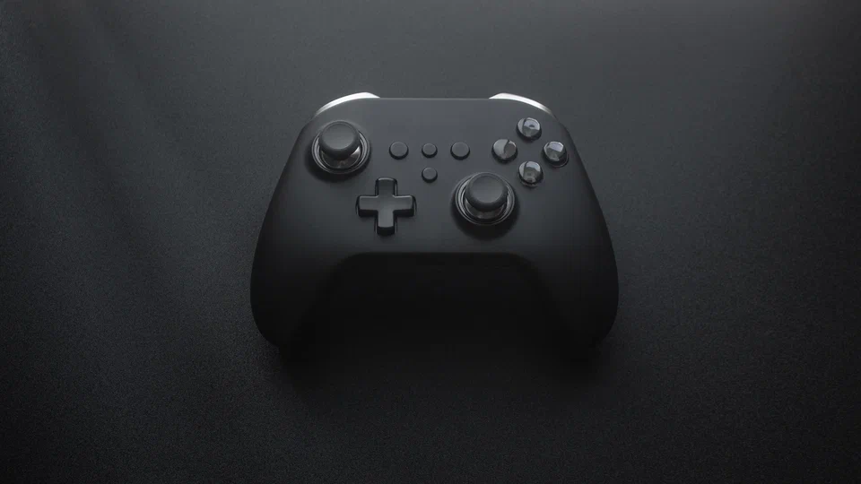

Аудитория видеоигр постоянно растет, все больше и больше людей задумываются о том, что хотят купить себе современную консоль, чтобы попробовать Hogwarts Legacy или узнать, чем же так популярна The Last of Us. Первым важным вопросом становится выбор устройства: на чем можно играть? Разумеется, есть универсальный ответ (конечно, ПК), но это замороченный вариант для тех, кому не лень разбираться с выбором видеокарт, оперативной памяти и прочих комплектующих. Куда более простой выход — купить современную игровую систему. Но и тут новоявленный геймер окажется перед выбором.
Добро пожаловать в захватывающий уголок интернета, где игры перестают быть просто развлечением, а становятся объектом глубокого исследования. Game Station Xplorer — место, где каждый нюанс современных игровых консолей раскрывается под микроскопом внимательного исследования. Современные игровые приставки перевернули мир развлечений и стали неотъемлемой частью жизни геймеров по всему миру. В этом путеводителе мы исследуем захватывающий мир современных игровых консолей, рассказывая о последних достижениях технологий, великих играх и возможностях, которые они предоставляют.
Погружение в Мир Game Station Xplorer.
Наши страницы представляют собой не просто сборник обзоров, а источник знаний, предоставляющий вам возможность окунуться в бескрайний океан геймерской культуры. Game Station Xplorer — это информационное путеводствие по просторам игровых миров, где каждый клик открывает новую главу увлекательной истории гейминга.
Мы приглашаем вас отправиться в путешествие сквозь временной вихрь, начиная с истоков игровых консолей и следуя за их эволюцией до современных технологических шедевров. Здесь мы раскрываем подкапотные детали, рассматриваем игровые библиотеки как произведения искусства, а технологический прогресс — как волнующий лабиринт неизведанных возможностей.
Изучай вместе с нами.
Game Station Xplorer — это не просто сайт, это ваш проводник в мире, где каждая деталь имеет значение, а каждая игра — источник вдохновения. Здесь мы не только развлекаемся, но и исследуем, делясь с вами уникальной перспективой на геймерскую реальность. Добро пожаловать в наше виртуальное путешествие, где игры превращаются в увлекательный исследовательский квест!